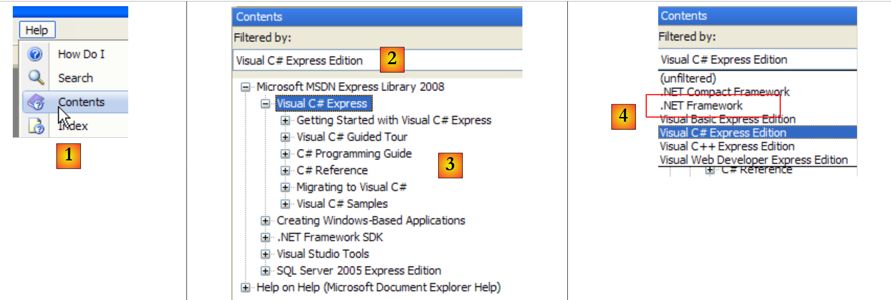
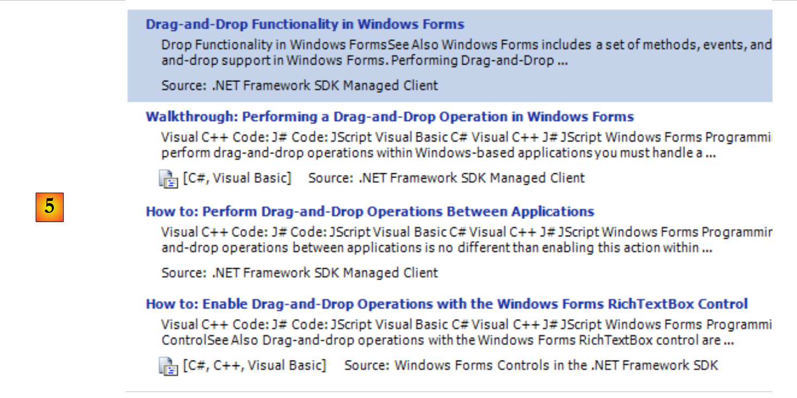
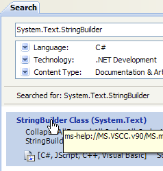
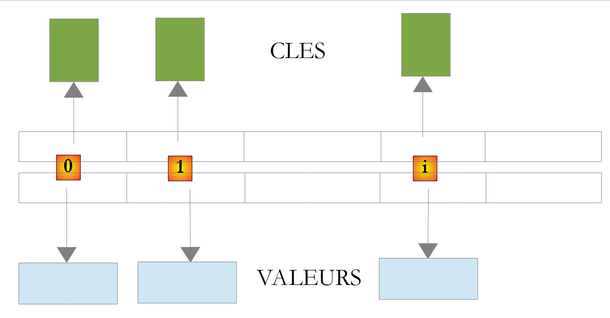

5. Clases .NET de uso común
A continuación, presentamos algunas clases de uso frecuente de la plataforma .NET. Antes de eso, le mostraremos cómo obtener información sobre los cientos de clases disponibles. Esta ayuda es indispensable incluso para el desarrollador de C# más experimentado. La calidad de la ayuda (fácil acceso, organización comprensible, relevancia de la información, etc.) puede marcar la diferencia en un entorno de desarrollo.
5.1. Buscar ayuda sobre clases .NET
Aquí te damos algunos consejos sobre cómo encontrar ayuda con Visual Studio.NET
5.1.1. Ayuda/Contenido
 |
- En [1], selecciona la opción del menú Ayuda/Contenido.
- En [2], selecciona la opción Visual C# Express Edition
- en [3], el árbol de ayuda de C#
- en [4], otra opción útil es .NET Framework, que da acceso a todas las clases de .NET Framework.
Echemos un vistazo a los títulos de los capítulos de la Ayuda de C#:
 |
- [1]: una introducción a C#
- [2]: una serie de ejemplos sobre determinados aspectos de C#
- [3]: un curso de C#; podría sustituir al presente documento.
 |
- [4]: para obtener más información sobre C#
- [5]: útil para desarrolladores de C++ o Java. Ayuda a evitar algunos errores.
- [6]: si buscas ejemplos, puedes empezar por ahí.
 |
- [7]: lo que necesitas saber para crear interfaces gráficas de usuario
- [8]: para sacar el máximo partido al IDE Visual Studio Express
 |
- [9]: SQL Server Express 2005 es un SGBD de alta calidad que se distribuye de forma gratuita. Se utilizará en este curso.
La ayuda de C# es solo una parte de lo que necesita el desarrollador. La otra parte es la ayuda con los cientos de clases del marco .NET que le facilitarán el trabajo.
 |
- [1]: selecciona la ayuda sobre el marco .NET
- [2]: la ayuda se encuentra en el SDK de .NET Framework
- [3]: la rama «.NET Framework Class Library» presenta todas las clases .NET según el espacio de nombres al que pertenecen
- [4]: el espacio de nombres System, que fue el más utilizado en los ejemplos de los capítulos anteriores
 |
- [5]: en el espacio de nombres System, un ejemplo, en este caso la estructura DateTime
 |
- [6]: ayuda sobre la estructura DateTime
5.1.2. Ayuda/Índice/Búsqueda
La ayuda que ofrece MSDN es enorme y es posible que no sepas dónde buscar. En ese caso, puedes utilizar el índice de ayuda:
 |
- en [1], utiliza la opción [Ayuda/Índice] si la ventana de ayuda aún no está abierta; de lo contrario, utiliza [2] en una ventana de ayuda ya abierta.
- en [3], especifica el campo en el que se va a realizar la búsqueda
- en [4], especifica lo que estás buscando, en este caso una clase
- en [5], la respuesta
Otra forma de buscar ayuda es utilizar la ayuda de búsqueda:
 |
- en [1], utilice la opción [Ayuda/Buscar] si la ventana de ayuda aún no está abierta; de lo contrario, utilice [2] en una ventana de ayuda ya abierta.
- en [3], especifique lo que está buscando
- en [4], filtra los campos de búsqueda
 |
- en [5], la respuesta en forma de diferentes temas en los que se ha encontrado el texto buscado.
5.2. Cadenas de caracteres
5.2.1. La clase System.String
 |  |  |
La clase System.String es idéntica al tipo simple string. Tiene muchas propiedades y métodos. Estos son solo algunos de ellos:
| |
| |
| |
| |
| |
| |
| |
| |
| |
| |
| |
| |
Un punto importante a tener en cuenta: cuando un método devuelve una cadena, dicha cadena es una cadena distinta de aquella a la que se ha aplicado el método. Por ejemplo, S1.Trim() devuelve una cadena S2, y S1 y S2 son dos cadenas diferentes.
Una cadena C puede considerarse como una matriz de caracteres. Por lo tanto,
- C[i] es el carácter i de C
- C.Length es el número de caracteres en C
Consideremos el siguiente ejemplo:
using System;
namespace Chap3 {
class Program {
static void Main(string[] args) {
string uneChaine = "l'oiseau vole au-dessus des nuages";
affiche("uneChaine=" + uneChaine);
affiche("uneChaine.Length=" + uneChaine.Length);
affiche("chaine[10]=" + uneChaine[10]);
affiche("uneChaine.IndexOf(\"vole\")=" + uneChaine.IndexOf("vole"));
affiche("uneChaine.IndexOf(\"x\")=" + uneChaine.IndexOf("x"));
affiche("uneChaine.LastIndexOf('a')=" + uneChaine.LastIndexOf('a'));
affiche("uneChaine.LastIndexOf('x')=" + uneChaine.LastIndexOf('x'));
affiche("uneChaine.Substring(4,7)=" + uneChaine.Substring(4, 7));
affiche("uneChaine.ToUpper()=" + uneChaine.ToUpper());
affiche("uneChaine.ToLower()=" + uneChaine.ToLower());
affiche("uneChaine.Replace('a','A')=" + uneChaine.Replace('a', 'A'));
string[] champs = uneChaine.Split(null);
for (int i = 0; i < champs.Length; i++) {
affiche("champs[" + i + "]=[" + champs[i] + "]");
}//for
affiche("Join(\":\",champs)=" + System.String.Join(":", champs));
affiche("(\" abc \").Trim()=[" + " abc ".Trim() + "]");
}//Main
public static void affiche(string msg) {
// poster msg
Console.WriteLine(msg);
}//poster
}//class
}//namespace
La ejecución da los siguientes resultados:
Veamos un nuevo ejemplo:
using System;
namespace Chap3 {
class Program {
static void Main(string[] args) {
// the line to be analyzed
string ligne = "un:deux::trois:";
// field separators
char[] séparateurs = new char[] { ':' };
// split
string[] champs = ligne.Split(séparateurs);
for (int i = 0; i < champs.Length; i++) {
Console.WriteLine("Champs[" + i + "]=" + champs[i]);
}
// join
Console.WriteLine("join=[" + System.String.Join(":", champs) + "]");
}
}
}
y resultados de rendimiento:
El método Split de la clase String se utiliza para dividir los elementos de una cadena de caracteres en una matriz. La definición de Split utilizada aquí es la siguiente:
public string[] Split(char[] separator);
matriz de caracteres. Estos caracteres representan los caracteres utilizados para separar los campos de la cadena. Así, si la cadena es «campo1, campo2, campo3», podemos utilizar separator=new char[] {','}. Si el separador es una serie de espacios, utilice separator=null. | |
matriz de cadenas en la que cada elemento de la matriz es un campo de cadena. |
El método Join es un método estático de la clase String:
public static string Join(string separator, string[] value);
matriz de cadenas | |
una cadena de caracteres que se utilizará como separador de campos | |
una cadena de caracteres formada por la concatenación de los elementos del array valor separados por el separador de cadena. |
5.2.2. La clase System.Text.StringBuilder
 |  |  |
Anteriormente, dijimos que los métodos de la clase String, al aplicarse a una cadena de caracteres S1, creaban otra cadena S2. La clase System.Text.StringBuilder permite manipular S1 sin necesidad de crear una cadena S2. Esto mejora el rendimiento al evitar la multiplicación de cadenas con una vida útil muy limitada.
La clase admite varios constructores:
| |
|
Un objeto StringBuilder trabaja con bloques de capacidad de caracteres para almacenar la cadena subyacente. La configuración predeterminada de la capacidad es 16. El tercer constructor anterior se utiliza para especificar la capacidad del bloque. El número de caracteres de capacidad necesarios para almacenar una cadena S es ajustado automáticamente por el StringBuilder. Existen constructores para establecer el número máximo de caracteres en un objeto StringBuilder. Por defecto, esta capacidad máxima es 2.147.483.647.
A continuación se muestra un ejemplo para ilustrar el concepto de capacidad:
using System.Text;
using System;
namespace Chap3 {
class Program {
static void Main(string[] args) {
// str
StringBuilder str = new StringBuilder("test");
Console.WriteLine("taille={0}, capacité={1}", str.Length, str.Capacity);
for (int i = 0; i < 10; i++) {
str.Append("test");
Console.WriteLine("taille={0}, capacité={1}", str.Length, str.Capacity);
}
// str2
StringBuilder str2 = new StringBuilder("test",10);
Console.WriteLine("taille={0}, capacité={1}", str2.Length, str2.Capacity);
for (int i = 0; i < 10; i++) {
str2.Append("test");
Console.WriteLine("taille={0}, capacité={1}", str2.Length, str2.Capacity);
}
}
}
}
- línea 7: creación del objeto StringBuilder con un tamaño de bloque de 16 caracteres
- línea 8: str.Length es el número actual de caracteres de la cadena str. str.Capacity es el número de caracteres que se pueden almacenar en la cadena str antes de reasignar un nuevo bloque.
- línea 10: str.Append(String S) concatena la cadena S de tipo String en la línea str de tipo StringBuilder.
- línea 14: creación del objeto StringBuilder con una capacidad de bloque de 10 caracteres
Resultado de la ejecución:
Estos resultados muestran que la clase sigue su propio algoritmo para asignar nuevos bloques cuando su capacidad es insuficiente:
- líneas 4-5: aumento de la capacidad en 16 caracteres
- líneas 8-9: la capacidad aumentó de 16 a 32 caracteres.
Estos son algunos de los métodos de la clase:
| |
| |
| |
| |
|
He aquí un ejemplo:
using System.Text;
using System;
namespace Chap3 {
class Program {
static void Main(string[] args) {
// str3
StringBuilder str3 = new StringBuilder("test");
Console.WriteLine(str3.Append("abCD").Insert(2, "xyZT").Remove(0, 2).Replace("xy", "XY"));
}
}
}
y sus resultados:
5.3. Pinturas
Las matrices se derivan de la clase Array:
 |  |  |
La clase Array dispone de varios métodos para ordenar una matriz, buscar un elemento en una matriz, cambiar el tamaño de una matriz, etc. A continuación, presentamos algunas de las propiedades y métodos de esta clase. Casi todos están sobrecargados, c.a.d., y existen en diferentes variantes. Todas las matrices los heredan.
Propiedades
Métodos
| |
|
El siguiente programa ilustra el uso de ciertos métodos de la clase Array:
using System;
namespace Chap3 {
class Program {
// search type
enum TypeRecherche { linéaire, dichotomique };
// main method
static void Main(string[] args) {
// reading table elements typed on the keyboard
double[] éléments;
Saisie(out éléments);
// unsorted table display
Affiche("Tableau non trié", éléments);
// Linear search in unsorted table
Recherche(éléments, TypeRecherche.linéaire);
// table sorting
Array.Sort(éléments);
// sorted table display
Affiche("Tableau trié", éléments);
// Dichotomous search in sorted table
Recherche(éléments, TypeRecherche.dichotomique);
}
// entering values for the elements table
// elements: reference on table created by the
static void Saisie(out double[] éléments) {
bool terminé = false;
string réponse;
bool erreur;
double élément = 0;
int i = 0;
// initially, the painting does not exist
éléments = null;
// table element input loop
while (!terminé) {
// question
Console.Write("Elément (réel) " + i + " du tableau (rien pour terminer) : ");
// reading the answer
réponse = Console.ReadLine().Trim();
// end of input if string empty
if (réponse.Equals(""))
break;
// input verification
try {
élément = Double.Parse(réponse);
erreur = false;
} catch {
Console.Error.WriteLine("Saisie incorrecte, recommencez");
erreur = true;
}//try-catch
// if no error
if (!erreur) {
// one more element in the table
i += 1;
// resize table to accommodate new element
Array.Resize(ref éléments, i);
// insert new element
éléments[i - 1] = élément;
}
}//while
}
// generic method for displaying a picture's elements
static void Affiche<T>(string texte, T[] éléments) {
Console.WriteLine(texte.PadRight(50, '-'));
foreach (T élément in éléments) {
Console.WriteLine(élément);
}
}
// recherche d'an element in the array
// elements: array of real
// TypeRecherche: dichotomous or linear
static void Recherche(double[] éléments, TypeRecherche type) {
// Search
bool terminé = false;
string réponse = null;
double élément = 0;
bool erreur = false;
int i = 0;
while (!terminé) {
// question
Console.WriteLine("Elément cherché (rien pour arrêter) : ");
// reading-checking response
réponse = Console.ReadLine().Trim();
// finished?
if (réponse.Equals(""))
break;
// check
try {
élément = Double.Parse(réponse);
erreur = false;
} catch {
Console.WriteLine("Erreur, recommencez...");
erreur = true;
}//try-catch
// if no error
if (!erreur) {
// on cherche l'element in the table
if (type == TypeRecherche.dichotomique)
// dichotomous search
i = Array.BinarySearch(éléments, élément);
else
// linear search
i = Array.IndexOf(éléments, élément);
// Display response
if (i >= 0)
Console.WriteLine("Trouvé en position " + i);
else
Console.WriteLine("Pas dans le tableau");
}//if
}//while
}
}
}
- líneas 27-62: el método Input captura los elementos de una matriz (elements) introducidos mediante el teclado. Como no podemos determinar el tamaño de la matriz a priori (no conocemos su tamaño final), tenemos que redimensionarla para cada nuevo elemento ( , línea 57). Un algoritmo más eficiente habría sido asignar espacio a la matriz en grupos de N elementos. Sin embargo, una matriz no está diseñada para cambiar de tamaño. Este caso se gestiona mejor con una lista (ArrayList, List<T>).
- líneas 75-113: el método Search para buscar en los elementos de la tabla un elemento escrito en el teclado. El modo de búsqueda varía dependiendo de si la tabla está ordenada o no. Para una matriz no ordenada, se realiza una búsqueda lineal utilizando el método IndexOf de la línea 106. Para una tabla ordenada, se realiza una búsqueda dicotómica utilizando el método BinarySearch de la línea 103.
- línea 18: la tabla contiene elementos ordenados. Utilizamos ici, una variante de Spell que solo tiene un parámetro: la matriz que se va a ordenar. La relación de orden utilizada para comparar los elementos de la matriz es entonces la implícita de dichos elementos. En el caso de Ici, los elementos son numéricos. Se utiliza el orden natural de los números.
Los resultados en pantalla son los siguientes:
5.4. Colecciones genéricas
Además de las matrices, existen diversas clases para almacenar colecciones de elementos. Hay versiones genéricas en el espacio de nombres System.Collections.Generic y versiones no genéricas en System.Collections. Presentamos dos colecciones genéricas de uso frecuente: la lista y el diccionario.
La lista de colecciones genéricas es la siguiente:

5.4.1. La clase genérica List<T>
La clase System.Collections.Generic.List<T> permite implementar colecciones de objetos de tipo T cuyo tamaño varía durante la ejecución del programa. Un objeto de tipo List<T> se puede manipular casi como una matriz. Por lo tanto, el elemento i de una lista l se denota como l[i].
También existe un tipo de lista no genérico: ArrayList, capaz de almacenar referencias a cualquier objeto. ArrayList es funcionalmente equivalente a List<Object>. Un objeto ArrayList tiene este aspecto:
 |
En el ejemplo anterior, los elementos 0, 1 e i de la lista apuntan a objetos de diferentes tipos. Primero hay que crear un objeto antes de añadir su referencia a la lista ArrayList. Aunque una ArrayList almacena referencias a objetos, es posible almacenar números. Esto se hace mediante un mecanismo llamado «boxing»: el número se encapsula en un objeto O de tipo Object y la referencia a O se almacena en la lista. Este mecanismo es transparente para el desarrollador. Se puede escribir:
Esto producirá el siguiente resultado:
 |
En el ejemplo anterior, el número 4 se ha encapsulado en un objeto O y la referencia a O se ha almacenado en la lista. Para recuperarlo, escribe:
int i = (int)liste[0];
La operación Object -> int se denomina «desencapsulación». Si una lista está compuesta íntegramente por int, declararla como List<int> mejora el rendimiento. De hecho, los números de tipo int se almacenan entonces en la propia lista y no en un objeto fuera de ella. Las operaciones de encapsulación y desencapsulación ya no tienen lugar.
En el caso de un objeto List<T> o T es una clase, la lista vuelve a almacenar referencias a objetos de tipo T:
 |
Estas son algunas de las propiedades y métodos de las listas genéricas:
Propiedades
|
Métodos
| |
| |
Volvamos al ejemplo anterior con un objeto de tipo Array y tratémoslo ahora con un objeto de tipo List<T>. Dado que la lista es un objeto similar a la matriz, el código cambia muy poco. Presentamos solo los cambios más notables:
using System;
using System.Collections.Generic;
namespace Chap3 {
class Program {
// search type
enum TypeRecherche { linéaire, dichotomique };
// main method
static void Main(string[] args) {
// play list items typed on keyboard
List<double> éléments;
Saisie(out éléments);
// number of elements
Console.WriteLine("La liste a {0} éléments et une capacité de {1} éléments", éléments.Count, éléments.Capacity);
// display unsorted list
Affiche("Liste non triée", éléments);
// Linear search in unsorted list
Recherche(éléments, TypeRecherche.linéaire);
// list sorting
éléments.Sort();
// sorted list display
Affiche("Liste triée", éléments);
// Dichotomous search in sorted list
Recherche(éléments, TypeRecherche.dichotomique);
}
// enter values for the items list
// elements: reference to the list created by the
static void Saisie(out List<double> éléments) {
...
// initially, the list is empty
éléments = new List<double>();
// list item entry loop
while (!terminé) {
...
// if no error
if (!erreur) {
// one more item in the list
éléments.Add(élément);
}
}//while
}
// generic method for displaying the elements of an enumerable object
static void Affiche<T>(string texte, IEnumerable<T> éléments) {
Console.WriteLine(texte.PadRight(50, '-'));
foreach (T élément in éléments) {
Console.WriteLine(élément);
}
}
// search for an item in a list
// elements: list of real numbers
// TypeRecherche: dichotomous or linear
static void Recherche(List<double> éléments, TypeRecherche type) {
...
while (!terminé) {
...
// if no error
if (!erreur) {
// search for the element in the list
if (type == TypeRecherche.dichotomique)
// dichotomous search
i = éléments.BinarySearch(élément);
else
// linear search
i = éléments.IndexOf(élément);
// Display response
...
}//if
}//while
}
}
}
- líneas 46-51: el método genérico Poster<T> tiene dos parámetros:
- el primer parámetro es un texto que se va a escribir
- el segundo parámetro es un objeto que implementa la interfaz genérica IEnumerable<T>:
La estructura «foreach( T element in elements)» de la línea 48 es válida para cualquier objeto «elements» que implemente la interfaz IEnumerable. Las tablas (Array) y las listas (List<T>) implementan la interfaz IEnumerable<T>. El Poster es igualmente adecuado para mostrar tablas y listas.
Los resultados de la ejecución del programa son los mismos que en el ejemplo que utiliza Array.
5.4.2. La clase Dictionary<TKey,TValue>
La clase System.Collections.Generic.Dictionary<TKey,TValue> se utiliza para implementar un diccionario. Un diccionario puede considerarse como una matriz con dos columnas:
clave | valor |
clave1 | valor1 |
clave2 | valor2 |
.. | ... |
En el contexto de Dictionary<TKey, TValue>, las claves son de tipo TKey y los valores de tipo TValue. Las claves son únicas, es decir, no puede haber dos claves idénticas. Un diccionario de este tipo podría tener este aspecto si los tipos TKey y TValue designaran clases:
 |
El valor asociado a la clave C de un diccionario D se indica mediante la notación D[C]. Este valor es legible y modificable. Por lo tanto, podemos escribir:
Si la clave c no existe en el diccionario D, la evaluación D[c] lanza una excepción.
Los principales métodos y propiedades de Dictionary<TKey,TValue> son los siguientes:
Fabricantes
Propiedades
Métodos
Considere el siguiente programa de ejemplo:
using System;
using System.Collections.Generic;
namespace Chap3 {
class Program {
static void Main(string[] args) {
// creation of a <string,int> dictionary
string[] liste = { "jean:20", "paul:18", "mélanie:10", "violette:15" };
string[] champs = null;
char[] séparateurs = new char[] { ':' };
Dictionary<string,int> dico = new Dictionary<string,int>();
for (int i = 0; i <liste.Length; i++) {
champs = liste[i].Split(séparateurs);
dico[champs[0]]= int.Parse(champs[1]);
}//for
// number of elements in the dictionary
Console.WriteLine("Le dictionnaire a " + dico.Count + " éléments");
// kEY LIST
Affiche("[Liste des clés]",dico.Keys);
// list of values
Affiche("[Liste des valeurs]", dico.Values);
// list of keys & values
Console.WriteLine("[Liste des clés & valeurs]");
foreach (string clé in dico.Keys) {
Console.WriteLine("clé=" + clé + " valeur=" + dico[clé]);
}
// delete the "paul" key
Console.WriteLine("[Suppression d'une clé]");
dico.Remove("paul");
// list of keys & values
Console.WriteLine("[Liste des clés & valeurs]");
foreach (string clé in dico.Keys) {
Console.WriteLine("clé=" + clé + " valeur=" + dico[clé]);
}
// dictionary search
String nomCherché = null;
Console.Write("Nom recherché (rien pour arrêter) : ");
nomCherché = Console.ReadLine().Trim();
int value;
while (!nomCherché.Equals("")) {
dico.TryGetValue(nomCherché, out value);
if (value!=0) {
Console.WriteLine(nomCherché + "," + value);
} else {
Console.WriteLine("Nom " + nomCherché + " inconnu");
}
// next search
Console.Out.Write("Nom recherché (rien pour arrêter) : ");
nomCherché = Console.ReadLine().Trim();
}//while
}
// generic method for displaying elements of an enumerable type
static void Affiche<T>(string texte, IEnumerable<T> éléments) {
Console.WriteLine(texte.PadRight(50, '-'));
foreach (T élément in éléments) {
Console.WriteLine(élément);
}
}
}
}
- línea 8: una tabla de cadenas que se utilizará para inicializar el diccionario <string,int>
- línea 11: el diccionario <cadena,int>
- líneas 12-15: su inicialización a partir de la cadena de la línea 8
- línea 17: número de entradas del diccionario
- línea 19: claves del diccionario
- línea 21: valores del diccionario
- línea 29: elimina una entrada del diccionario
- línea 41: búsqueda de una clave en el diccionario. Si no existe, TryGetValue establecerá 0 en value, ya que value es numérico. Esta técnica solo se puede utilizar aquí porque sabemos que el valor 0 no está en el diccionario.
Los resultados son los siguientes:
5.5. Archivos de texto
5.5.1. La clase StreamReader
La clase System.IO.StreamReader permite leer el contenido de un archivo de texto. De hecho, puede trabajar con flujos que no sean archivos. A continuación se enumeran algunas de sus propiedades y métodos:
Fabricantes
Propiedades
Métodos
Aquí tienes un ejemplo:
using System;
using System.IO;
namespace Chap3 {
class Program {
static void Main(string[] args) {
// execution directory
Console.WriteLine("Répertoire d'exécution : "+Environment.CurrentDirectory);
string ligne = null;
StreamReader fluxInfos = null;
// read contents of infos.txt file
try {
// reading 1
Console.WriteLine("Lecture 1----------------");
using (fluxInfos = new StreamReader("infos.txt")) {
ligne = fluxInfos.ReadLine();
while (ligne != null) {
Console.WriteLine(ligne);
ligne = fluxInfos.ReadLine();
}
}
// reading 2
Console.WriteLine("Lecture 2----------------");
using (fluxInfos = new StreamReader("infos.txt")) {
Console.WriteLine(fluxInfos.ReadToEnd());
}
} catch (Exception e) {
Console.WriteLine("L'erreur suivante s'est produite : " + e.Message);
}
}
}
}
- línea 8: muestra el nombre del directorio de ejecución
- líneas 12 y 27: un try/catch para gestionar una posible excepción.
- línea 15: la estructura using flux=new StreamReader(...) es una facilidad para evitar tener que cerrar explícitamente el flujo después de haberlo utilizado. Esto se hace automáticamente en cuanto se sale del ámbito del using.
- línea 15: el archivo que se lee se llama infos.txt. Al ser un nombre relativo, se buscará en el directorio de ejecución mostrado en la línea 8. Si no está allí, se lanzará una excepción que será gestionada por el try / catch.
- líneas 16-20: el archivo se lee línea por línea
- línea 25: el archivo se lee de una sola vez
El archivo infos.txt es el siguiente:
y se colocan en la siguiente carpeta del proyecto C#:
 |
Estamos a punto de descubrir que «bin/Release» es la carpeta de ejecución cuando se ejecuta el proyecto con Ctrl+F5.
La ejecución da los siguientes resultados:
Si en la línea 15 ponemos el nombre de archivo xx.txt, obtenemos los siguientes resultados:
5.5.2. La clase StreamWriter
La clase System.IO.StreamReader permite escribir en un archivo de texto. Al igual que StreamReader, es capaz de trabajar con flujos que no son archivos. Estas son algunas de sus propiedades y métodos:
Fabricantes
Propiedades
Métodos
Considere el siguiente ejemplo:
using System;
using System.IO;
namespace Chap3 {
class Program2 {
static void Main(string[] args) {
// execution directory
Console.WriteLine("Répertoire d'exécution : " + Environment.CurrentDirectory);
string ligne = nu ll; // one line of text
StreamWriter fluxInfos = nu ll; // the text file
try {
// text file creation
using (fluxInfos = new StreamWriter("infos2.txt")) {
Console.WriteLine("Mode AutoFlush : {0}", fluxInfos.AutoFlush);
// read line typed on keyboard
Console.Write("ligne (rien pour arrêter) : ");
ligne = Console.ReadLine().Trim();
// loop as long as the line entered is not empty
while (ligne != "") {
// write line to text file
fluxInfos.WriteLine(ligne);
// read new line on keyboard
Console.Write("ligne (rien pour arrêter) : ");
ligne = Console.ReadLine().Trim();
}//while
}
} catch (Exception e) {
Console.WriteLine("L'erreur suivante s'est produite : " + e.Message);
}
}
}
}
- línea 13: una vez más, utilizamos la sintaxis using(stream) para evitar tener que cerrar explícitamente el flujo con un Close. Esto se hace automáticamente cuando el using.
- ¿Por qué un try / catch, líneas 11 y 27? En la línea 13, podríamos indicar un nombre de archivo en el formato /rep1/rep2/ .../file con una ruta /rep1/rep2/... que no existe, lo que haría imposible crear el archivo. En ese caso, se lanzaría una excepción. Existen otras excepciones posibles (disco lleno, derechos insuficientes, etc.).
Los resultados son los siguientes:
Se ha creado el archivo infos2.txt en la carpeta bin/Release del proyecto:
 |  |
5.6. Archivos binarios
Las clases System.IO.BinaryReader y System.IO.BinaryWriter se utilizan para leer y escribir archivos binarios.
Consideremos la siguiente aplicación:
// syntaxe pg texte bin logs
// on lit un fichier texte (texte) et on range son contenu dans un fichier binaire (bin
// le fichier texte a des lignes de la forme nom : age qu'on rangera dans une structure string, int
// (logs) est un fichier texte de logs
El archivo de texto tiene el siguiente contenido:
El programa es el siguiente:
using System;
using System.IO;
// syntax pg text bin logs
// read a text file (text) and store its contents in a binary file (bin)
// the text file has lines of the form name: age, which will be stored in a structure string, int
// (logs) is a text log file
namespace Chap3 {
class Program {
static void Main(string[] arguments) {
// you need 3 arguments
if (arguments.Length != 3) {
Console.WriteLine("syntaxe : pg texte binaire log");
Environment.Exit(1);
}//if
// variables
string ligne=null;
string nom=null;
int age=0;
int numLigne = 0;
char[] séparateurs = new char[] { ':' };
string[] champs=null;
StreamReader input = null;
BinaryWriter output = null;
StreamWriter logs = null;
bool erreur = false;
// read text file - write binary file
try {
// open text file in read mode
input = new StreamReader(arguments[0]);
// open binary file for writing
output = new BinaryWriter(new FileStream(arguments[1], FileMode.Create, FileAccess.Write));
// open write log file
logs = new StreamWriter(arguments[2]);
// text file processing
while ((ligne = input.ReadLine()) != null) {
// one more line
numLigne++;
// empty line?
if (ligne.Trim() == "") {
// on ignore
continue;
}
// one line name: age
champs = ligne.Split(séparateurs);
// we need 2 fields
if (champs.Length != 2) {
// on logue l'erreur
logs.WriteLine("La ligne n° [{0}] du fichier [{1}] a un nombre de champs incorrect", numLigne, arguments[0]);
// next line
continue;
}//if
// 1st field must be non-empty
erreur = false;
nom = champs[0].Trim();
if (nom == "") {
// on logue l'erreur
logs.WriteLine("La ligne n° [{0}] du fichier [{1}] a un nom vide", numLigne, arguments[0]);
erreur = true;
}
// the second field must be an integer >=0
if (!int.TryParse(champs[1],out age) || age<0) {
// on logue l'erreur
logs.WriteLine("La ligne n° [{0}] du fichier [{1}] a un âge [{2}] incorrect", numLigne, arguments[0], champs[1].Trim());
erreur = true;
}//if
// if no error, write data to binary file
if (!erreur) {
output.Write(nom);
output.Write(age);
}
// next line
}//while
}catch(Exception e){
Console.WriteLine("L'erreur suivante s'est produite : {0}", e.Message);
} finally {
// closing files
if(input!=null) input.Close();
if(output!=null) output.Close();
if(logs!=null) logs.Close();
}
}
}
}
Centrémonos en las operaciones relacionadas con BinaryWriter:
- línea 34: el objeto BinaryWriter se abre mediante el
output=new BinaryWriter(new FileStream(arguments[1],FileMode.Create,FileAccess.Write));
El argumento del constructor debe ser un flujo. Aquí se trata de un flujo creado a partir de un archivo (FileStream) dado:
- (continuación)
- el nombre
- la operación que se va a realizar, aquí FileMode.Create para crear el
- tipo de acceso, en este caso FileAccess.Write para el acceso de escritura al archivo
- líneas 70-73: operaciones de escritura
La clase BinaryWriter dispone de una serie de métodos Write sobrecargados para escribir los distintos tipos de datos simples
- línea 81: operación de cierre de flujo
Los tres argumentos del método Main se proporcionan al proyecto (a través de sus propiedades) [1] y el archivo de texto que se va a utilizar se coloca en la carpeta bin/Release [2]:
 |
Con el siguiente archivo [personnes1.txt]:
los resultados son los siguientes:
 |
- en [1], el archivo binario creado [personnes1.bin] y el archivo de registro [logs.txt]. Este último tiene el siguiente contenido:
El contenido del archivo binario [personnes1.bin] nos lo proporcionará el siguiente programa. También admite tres argumentos:
// syntaxe pg bin texte logs
// on lit un fichier binaire bin et on range son contenu dans un fichier texte (texte)
// le fichier binaire a une structure string, int
// le fichier texte a des lignes de la forme nom : age
// logs est un fichier texte de logs
Por lo tanto, realizamos la operación inversa. Leemos un archivo binario para crear un archivo de texto. Si el archivo de texto resultante es idéntico al archivo original, sabremos que la conversión texto --> binario --> texto se ha realizado correctamente. El código es el siguiente:
using System;
using System.IO;
// syntax pg bin text logs
// read a binary bin file and store its contents in a text file (text)
// the binary file has a structure string, int
// the text file has lines of the form name: age
// logs is a text log file
namespace Chap3 {
class Program2 {
static void Main(string[] arguments) {
// you need 3 arguments
if (arguments.Length != 3) {
Console.WriteLine("syntaxe : pg binaire texte log");
Environment.Exit(1);
}//if
// variables
string nom = null;
int age = 0;
int numPersonne = 1;
BinaryReader input = null;
StreamWriter output = null;
StreamWriter logs = null;
bool fini;
// read binary file - write text file
try {
// open binary file for reading
input = new BinaryReader(new FileStream(arguments[0], FileMode.Open, FileAccess.Read));
// open text file for writing
output = new StreamWriter(arguments[1]);
// open write log file
logs = new StreamWriter(arguments[2]);
// binary file processing
fini = false;
while (!fini) {
try {
// read name
nom = input.ReadString().Trim();
// age reading
age = input.ReadInt32();
// writing to text file
output.WriteLine(nom + ":" + age);
// next person
numPersonne++;
} catch (EndOfStreamException) {
fini = true;
} catch (Exception e) {
logs.WriteLine("L'erreur suivante s'est produite à la lecture de la personne n° {0} : {1}", numPersonne, e.Message);
}
}//while
} catch (Exception e) {
Console.WriteLine("L'erreur suivante s'est produite : {0}", e.Message);
} finally {
// closing files
if (input != null)
input.Close();
if (output != null)
output.Close();
if (logs != null)
logs.Close();
}
}
}
}
Centrémonos en las operaciones relacionadas con el BinaryReader:
- línea 30: el objeto BinaryReader se abre mediante el
input=new BinaryReader(new FileStream(arguments[0],FileMode.Open,FileAccess.Read));
El argumento del constructor debe ser un flujo. Aquí se trata de un flujo creado a partir de un archivo (FileStream) dado:
- (continuación)
- el nombre
- la operación que se va a realizar, aquí FileMode.Open para abrir un archivo existente
- el tipo de acceso, aquí FileAccess.Read para el acceso de lectura al archivo
- líneas 40, 42: operaciones de lectura
La clase BinaryReader dispone de una serie de métodos ReadXX para leer diferentes tipos de datos simples
- línea 60: operación de cierre del flujo
Si ejecutamos los dos programas en cadena, transformando «personnes1.txt» en «personnes1.bin» y, a continuación, «personnes1.bin» en «personnes2.txt2», obtenemos los siguientes resultados:
 |
- en [1], el proyecto está configurado para ejecutar la segunda aplicación
- en [2], los argumentos pasados a Main
- en [3], los archivos generados por la ejecución de la aplicación.
El contenido de [personnes2.txt] es el siguiente:
5.7. Expresiones regulares
La clase System.Text.RegularExpressions.Regex permite el uso de expresiones regulares. Estas permiten comprobar el formato de una cadena de caracteres. Por ejemplo, podemos comprobar que una cadena que representa una fecha esté en formato dd/mm/aa. Para ello, utilizamos una plantilla y comparamos la cadena con dicha plantilla. En este ejemplo, d, m y a deben ser números. El modelo para un formato de fecha válido es entonces «\d\d/\d\d/\d\d», donde el símbolo \d designa un número. En un modelo se pueden utilizar los siguientes símbolos:
Descripción | |
Marca el siguiente carácter como especial o literal. Por ejemplo, «n» corresponde al carácter «n». «\n» corresponde a un carácter de nueva línea. La secuencia «\» corresponde a «\», mientras que «\» corresponde a «(». | |
Corresponde al inicio de la entrada. | |
Corresponde al final de la entrada. | |
Corresponde al carácter anterior cero o más veces. Por ejemplo, «zo*» corresponde a «z» o «zoo». | |
Corresponde al carácter anterior una o más veces. Por ejemplo, «zo+» coincide con «zoo», pero no con «z». | |
Corresponde al carácter anterior cero o una vez. Por ejemplo, «a?ve?» corresponde a «ve» en «lever». | |
Corresponde a cualquier carácter único, excepto al carácter de nueva línea. | |
Busca en el modelo y memoriza la correspondencia. La subcadena correspondiente se puede extraer de las coincidencias utilizando Item [0]...[n]. Para encontrar coincidencias con caracteres entre paréntesis ( ), utiliza «\(" o "\)". | |
Corresponde a x o a y. Por ejemplo, «z|foot» corresponde a «z» o a «foot». «(z|f)oo» corresponde a «zoo» o a «foo». | |
n es un entero no negativo. Se corresponde exactamente con n veces el carácter. Por ejemplo, «o{2}» no se corresponde con la «o» de «Bob», sino con las dos primeras «o» de «fooooot». | |
n es un entero no negativo. Corresponde al menos a n veces el carácter. Por ejemplo, «o{2,}» no corresponde a la «o» de «Bob», sino a todas las «o» de «fooooot». «o{1,}» equivale a «o+» y «o{0,}» equivale a «o*». | |
m y n son números enteros no negativos. Corresponde a un mínimo de n y un máximo de m repeticiones del carácter. Por ejemplo, «o{1,3}» corresponde a las tres primeras «o» de «foooooot» y «o{0,1}» es equivalente a «o?». | |
Conjunto de caracteres. Corresponde a uno de los caracteres indicados. Por ejemplo, «[abc]» corresponde a la «a» de «plat». | |
Conjunto de caracteres negativo. Corresponde a cualquier carácter no especificado. Por ejemplo, «[^abc]» corresponde a la «p» de «plat». | |
Rango de caracteres. Corresponde a cualquier carácter del rango especificado. Por ejemplo, «[a-z]» corresponde a cualquier letra minúscula entre «a» y «z». | |
Rango de caracteres negativo. Corresponde a cualquier carácter que no esté en el rango especificado. Por ejemplo, «[^m-z]» corresponde a cualquier carácter que no esté entre «m» y «z». | |
Corresponde a un límite que representa una palabra; en otras palabras, la posición entre una palabra y un espacio. Por ejemplo, «er\b» corresponde a «er» en «lever», pero no a «er» en «verb». | |
Corresponde a un límite que no representa una palabra. «en*t\B» corresponde a «ent» en «bien entendu». | |
Corresponde a un carácter que representa un dígito. Equivalente a [0-9]. | |
Corresponde a un carácter que no representa un dígito. Equivalente a [^0-9]. | |
Corresponde a un carácter de salto de página. | |
Corresponde a un carácter de nueva línea. | |
Corresponde a un carácter de retorno de carro. | |
Corresponde a cualquier espacio en blanco, incluyendo espacio, tabulación, salto de página, etc. Equivalente a «[ \f\r\t\v]». | |
Corresponde a cualquier carácter que no sea un espacio en blanco. Equivalente a «[^ \f\n\r\t\v]». | |
Corresponde a un carácter de tabulación. | |
Corresponde a un carácter de tabulación vertical. | |
Corresponde a cualquier carácter que represente una palabra, incluido el guión bajo. Equivalente a «[A-Za-z0-9_]». | |
Corresponde a cualquier carácter que no represente una palabra. Equivalente a «[^A-Za-z0-9_]». | |
Corresponde a num, donde num es un número entero positivo. Se refiere a coincidencias almacenadas. Por ejemplo, «(.)\1» corresponde a dos caracteres idénticos consecutivos. | |
Corresponde a n, donde n es un valor de escape octal. Los valores de escape octales deben contener 1, 2 o 3 dígitos. Por ejemplo, tanto «\11» como «\011» corresponden a un carácter de tabulación. «\0011» es equivalente a «\001» y «1». Los valores de escape octales no deben superar 256. Si fuera así, solo se tendrían en cuenta los dos primeros dígitos en la expresión. Permite utilizar códigos ASCII en expresiones regulares. | |
Corresponde a n, donde n es un valor de escape hexadecimal. Los valores de escape hexadecimales deben contener dos dígitos. Por ejemplo, «\x41» corresponde a «A». «\x041» es equivalente a «\x04» y «1». Permite utilizar códigos ASCII en expresiones regulares. |
Un elemento de un modelo puede aparecer en una o más copias. Veamos algunos ejemplos con el símbolo \d, que representa un dígito:
modelo | significado |
\d | un número |
\d? | 0 o 1 dígito |
\d* | 0 o más dígitos |
\d+ | 1 o más dígitos |
\d{2} | 2 cifras |
\d{3,} | al menos 3 dígitos |
\d{5,7} | entre 5 y 7 dígitos |
Ahora imaginemos un modelo capaz de describir el formato esperado para una cadena:
cadena de búsqueda | modelo |
una fecha en formato dd/mm/aa | \d{2}/\d{2}/\d{2} |
una hora en formato hh:mm:ss | \d{2}:\d{2}:\d{2} |
un entero sin signo | \d+ |
una secuencia de espacios que pueden estar vacíos | \s* |
un entero sin signo que puede ir precedido o seguido de espacios | \s*\d+\s* |
un entero que puede ser con signo y estar precedido o seguido de espacios | \s*[+|-]?\s*\d+\s* |
un número real sin signo que puede ir precedido o seguido de espacios | \s*\d+(.\d*)?\s* |
un número real que puede ser con signo y estar precedido o seguido de espacios | \s*[+|]?\s*\d+(.\d*)?\s* |
una cadena que contenga la palabra «just» | \bjust\b |
Puedes especificar en qué parte de la cadena buscar el modelo:
modelo | significa |
^modelo | el modelo inicia la cadena |
modelo$ | el modelo termina la cadena |
^modelo$ | el modelo inicia y finaliza la cadena |
modelo | el modelo se busca en toda la cadena, empezando por el principio. |
cadena de búsqueda | modelo |
una cadena que termina con un signo de exclamación | !$ |
una cadena que termina con un punto | \.$ |
una cadena que comienza con la secuencia // | ^// |
una cadena que contiene solo una palabra, posiblemente seguida o precedida de espacios | ^\s*\w+\s*$ |
una cadena que contenga solo dos palabras, posiblemente precedida o seguida de espacios | ^\s*\w+\s*\w+\s*$ |
una cadena que contiene la palabra «secret» | \bsecret\b |
Los subconjuntos de un modelo se pueden «recuperar». De esta forma, no solo podemos comprobar que una cadena se corresponde con un modelo concreto, sino que también podemos extraer de esta cadena los elementos correspondientes a los subconjuntos del modelo que se han incluido entre corchetes. Así, si estamos analizando una cadena que contiene una fecha dd/mm/aa y también queremos extraer los elementos dd, mm, aa de esta fecha, utilizaremos el modelo (dd)/(dd)/(dd).
5.7.1. Comprobar que una cadena se corresponde con un modelo dado
Un objeto de tipo Regex se construye de la siguiente manera:
Una vez construida la expresión regular de la plantilla, se puede comparar con cadenas utilizando IsMatch :
He aquí un ejemplo:
using System;
using System.Text.RegularExpressions;
namespace Chap3 {
class Program {
static void Main(string[] args) {
// a regular expression template
string modèle1 = @"^\s*\d+\s*$";
Regex regex1 = new Regex(modèle1);
// compare a copy with the model
string exemplaire1 = " 123 ";
if (regex1.IsMatch(exemplaire1)) {
Console.WriteLine("[{0}] correspond au modèle [{1}]", exemplaire1, modèle1);
} else {
Console.WriteLine("[{0}] ne correspond pas au modèle [{1}]", exemplaire1, modèle1);
}//if
string exemplaire2 = " 123a ";
if (regex1.IsMatch(exemplaire2)) {
Console.WriteLine("[{0}] correspond au modèle [{1}]", exemplaire2, modèle1);
} else {
Console.WriteLine("[{0}] ne correspond pas au modèle [{1}]", exemplaire2, modèle1);
}//if
}
}
}
y resultados de rendimiento:
5.7.2. Buscar todas las apariciones de un patrón en una cadena
El método Matches recupera los elementos de una cadena que se corresponden con un :
La clase MatchCollection tiene una propiedad Count que es el número de elementos de la colección. Si results es un objeto MatchCollection, results[i] es el elemento i de esta colección y es de tipo Match. La clase Match tiene varias propiedades, entre las que se incluyen las siguientes:
- Value: objeto de tipo Match, un elemento correspondiente al
- Index: la posición en la que se encontró el elemento en la cadena explorada
Consideremos el siguiente ejemplo:
using System;
using System.Text.RegularExpressions;
namespace Chap3 {
class Program2 {
static void Main(string[] args) {
// several occurrences of the model in the copy
string modèle2 = @"\d+";
Regex regex2 = new Regex(modèle2);
string exemplaire3 = " 123 456 789 ";
MatchCollection résultats = regex2.Matches(exemplaire3);
Console.WriteLine("Modèle=[{0}],exemplaire=[{1}]", modèle2, exemplaire3);
Console.WriteLine("Il y a {0} occurrences du modèle dans l'exemplaire ", résultats.Count);
for (int i = 0; i < résultats.Count; i++) {
Console.WriteLine("[{0}] trouvé en position {1}", résultats[i].Value, résultats[i].Index);
}//for
}
}
}
- línea 8: el patrón buscado es una secuencia de números
- línea 10: la cadena en la que buscar este patrón
- línea 11: todos los elementos de la copia3 que verifican el patrón model2
- líneas 14-16: se muestran
Los resultados del programa son los siguientes:
5.7.3. Recuperar partes de un modelo
Se pueden «recuperar» subconjuntos de un modelo. De esta forma, no solo podemos comprobar que una cadena se corresponde con un modelo concreto, sino que también podemos extraer de esta cadena los elementos correspondientes a los subconjuntos del modelo que se han incluido entre corchetes. Así, si estamos analizando una cadena que contiene una fecha dd/mm/aa y también queremos extraer los elementos dd, mm, aa de esta fecha, utilizaremos el modelo (dd)/(dd)/(dd).
Consideremos el siguiente ejemplo:
using System;
using System.Text.RegularExpressions;
namespace Chap3 {
class Program3 {
static void Main(string[] args) {
// capture elements in the model
string modèle3 = @"(\d\d):(\d\d):(\d\d)";
Regex regex3 = new Regex(modèle3);
string exemplaire4 = "Il est 18:05:49";
// model checking
Match résultat = regex3.Match(exemplaire4);
if (résultat.Success) {
// the copy corresponds to the model
Console.WriteLine("L'exemplaire [{0}] correspond au modèle [{1}]",exemplaire4,modèle3);
// display groups of parentheses
for (int i = 0; i < résultat.Groups.Count; i++) {
Console.WriteLine("groupes[{0}]=[{1}] trouvé en position {2}",i, résultat.Groups[i].Value,résultat.Groups[i].Index);
}//for
} else {
// the copy does not correspond to the model
Console.WriteLine("L'exemplaire[{0}] ne correspond pas au modèle [{1}]", exemplaire4, modèle3);
}
}
}
}
Al ejecutar este programa se obtienen los siguientes resultados:
La novedad se encuentra en las líneas 12-19:
- línea 12: la cadena «exemplary4» se compara con la expresión regular «regex3» mediante el objeto Match. Esto crea un objeto Match ya presentado. Aquí utilizamos dos nuevas propiedades de esta clase:
- Success (línea 13): indica si hubo una coincidencia
- Groups (líneas 17 y 18): colección en la que
- Groups[0] es la parte de la cadena que corresponde al patrón
- Groups[i] (i>=1) corresponde al grupo de paréntesis n.º i
Si el tipo de resultado es Match, el tipo de results.Groups es GroupCollection y el tipo de results.Groups[i] es Group. La clase Group tiene dos propiedades que utilizamos aquí:
- Valor (línea 18): el valor del objeto «Group», que es el elemento correspondiente al contenido de un paréntesis
- Índice (línea 18): la posición en la que se encontró el elemento en la cadena explorada
5.7.4. Un programa de aprendizaje
Encontrar la expresión regular para comprobar que una cadena coincide con un patrón determinado puede ser todo un reto. El siguiente programa te ofrece la oportunidad de practicar. Te pide un patrón y una cadena, e indica si la cadena coincide o no con el patrón.
using System;
using System.Text.RegularExpressions;
namespace Chap3 {
class Program4 {
static void Main(string[] args) {
// data
string modèle, chaine;
Regex regex = null;
MatchCollection résultats;
// the user is asked for models and samples to compare with this one
while (true) {
// the model is requested
Console.Write("Tapez le modèle à tester ou rien pour arrêter :");
modèle = Console.In.ReadLine();
// finished?
if (modèle.Trim() == "")
break;
// we create the regular expression
try {
regex = new Regex(modèle);
} catch (Exception ex) {
Console.WriteLine("Erreur : " + ex.Message);
continue;
}
// the user is asked for the specimens to be compared with the model
while (true) {
Console.Write("Tapez la chaîne à comparer au modèle [{0}] ou rien pour arrêter :", modèle);
chaine = Console.ReadLine();
// finished?
if (chaine.Trim() == "")
break;
// we make the comparison
résultats = regex.Matches(chaine);
// success?
if (résultats.Count == 0) {
Console.WriteLine("Je n'ai pas trouvé de correspondances");
continue;
}//if
// the elements corresponding to the model are displayed
for (int i = 0; i < résultats.Count; i++) {
Console.WriteLine("J'ai trouvé la correspondance [{0}] en position [{1}]", résultats[i].Value, résultats[i].Index);
// sub-elements
if (résultats[i].Groups.Count != 1) {
for (int j = 1; j < résultats[i].Groups.Count; j++) {
Console.WriteLine("\tsous-élément [{0}] en position [{1}]", résultats[i].Groups[j].Value, résultats[i].Groups[j].Index);
}
}
}
}
}
}
}
}
Aquí tienes un ejemplo:
5.7.5. El método Split
Ya hemos visto este método en la clase String:
|
El método Split de la clase Regex nos permite expresar el separador en términos de un :
|
Por ejemplo, supongamos que tenemos líneas en un archivo de texto con el formato campo1, campo2, …, campo n. Los campos están separados por comas, que pueden ir precedidas o seguidas de espacios. La clase Split no es adecuada. La expresión regular (RegEx) ofrece la solución. Si line es la línea leída, los campos se pueden obtener mediante
tal y como se muestra en el siguiente ejemplo:
using System;
using System.Text.RegularExpressions;
namespace Chap3 {
class Program5 {
static void Main(string[] args) {
// a line
string ligne = "abc , def , ghi";
// a model
Regex modèle = new Regex(@"\s*,\s*");
// decomposition of line into fields
string[] champs = modèle.Split(ligne);
// display
for (int i = 0; i < champs.Length; i++) {
Console.WriteLine("champs[{0}]=[{1}]", i, champs[i]);
}
}
}
}
Resultados de rendimiento:
5.8. Aplicación de ejemplo - V3
Volvemos a la aplicación estudiada en los apartados 3.6 (versión 1) y 4.10 (versión 2).
En la última versión estudiada, el cálculo de impuestos se realizaba en la clase abstracta AbstractImpot :
namespace Chap2 {
abstract class AbstractImpot : IImpot {
// tax brackets required to calculate tax
// come from an external source
protected TrancheImpot[] tranchesImpot;
// tAX CALCULATION
public int calculer(bool marié, int nbEnfants, int salaire) {
// calculating the number of shares
decimal nbParts;
if (marié) nbParts = (decimal)nbEnfants / 2 + 2;
else nbParts = (decimal)nbEnfants / 2 + 1;
if (nbEnfants >= 3) nbParts += 0.5M;
// calculation of taxable income & family quota
decimal revenu = 0.72M * salaire;
decimal QF = revenu / nbParts;
// tAX CALCULATION
tranchesImpot[tranchesImpot.Length - 1].Limite = QF + 1;
int i = 0;
while (QF > tranchesImpot[i].Limite) i++;
// return result
return (int)(revenu * tranchesImpot[i].CoeffR - nbParts * tranchesImpot[i].CoeffN);
}//calculate
}//class
}
El método calculate de la línea 38 utiliza el tranchesImpot de la línea 35, una matriz no inicializada por AbstractImpot. Por eso es abstracta y debe derivarse para ser útil. Esta inicialización la realizó la clase derivada HardwiredImpot :
using System;
namespace Chap2 {
class HardwiredImpot : AbstractImpot {
// data tables required to calculate the
decimal[] limites = { 4962M, 8382M, 14753M, 23888M, 38868M, 47932M, 0M };
decimal[] coeffR = { 0M, 0.068M, 0.191M, 0.283M, 0.374M, 0.426M, 0.481M };
decimal[] coeffN = { 0M, 291.09M, 1322.92M, 2668.39M, 4846.98M, 6883.66M, 9505.54M };
public HardwiredImpot() {
// creation of a table of
tranchesImpot = new TrancheImpot[limites.Length];
// filling
for (int i = 0; i < tranchesImpot.Length; i++) {
tranchesImpot[i] = new TrancheImpot { Limite = limites[i], CoeffR = coeffR[i], CoeffN = coeffN[i] };
}
}
}// class
}// namespace
En el ejemplo anterior, los datos necesarios para calcular el impuesto estaban codificados de forma fija en el código de la clase. La nueva versión del ejemplo los coloca en un archivo de texto:
4962:0:0
8382:0,068:291,09
14753:0,191:1322,92
23888:0,283:2668,39
38868:0,374:4846,98
47932:0,426:6883,66
0:0,481:9505,54
Dado que la ejecución de este archivo puede generar excepciones, creamos una clase especial para gestionarlas:
using System;
namespace Chap3 {
class FileImpotException : Exception {
// error codes
[Flags]
public enum CodeErreurs { Acces = 1, Ligne = 2, Champ1 = 4, Champ2 = 8, Champ3 = 16 };
// error code
public CodeErreurs Code { get; set; }
// manufacturers
public FileImpotException() {
}
public FileImpotException(string message)
: base(message) {
}
public FileImpotException(string message, Exception e)
: base(message,e) {
}
}
}
- línea 4: la clase FileImportException deriva de la clase Exception. Se utilizará para registrar cualquier error que pueda producirse durante el procesamiento del archivo de texto de datos.
- línea 7: una enumeración que representa los códigos de error:
- Access: error al acceder al archivo de datos de texto
- Línea: línea sin los tres campos esperados
- Field1: el campo n.º 1 es incorrecto
- Champ2: el campo n.º 2 es incorrecto
- Campo3: el campo n.º 3 es incorrecto
Algunos de estos errores pueden combinarse (Campo1, Campo2, Campo3). Por lo tanto, la enumeración CodeErreurs se ha anotado con el atributo [Flags], lo que implica que los distintos valores de la enumeración deben ser potencias de 2. Un error en los campos 1 y 2 dará lugar al código de error Campo1 | Campo2.
- línea 10: el código de propiedad automática almacenará el código de error.
- líneas 15: un constructor para crear un objeto FileImportException con un mensaje de error como parámetro.
- líneas 18: un constructor para crear un objeto FileImportException pasando un mensaje de error y la excepción que causa el error como parámetros.
La clase que inicializa la clase tranchesImpot, AbstractImpot, queda ahora así:
using System;
using System.Collections.Generic;
using System.IO;
using System.Text.RegularExpressions;
namespace Chap3 {
class FileImpot : AbstractImpot {
public FileImpot(string fileName) {
// data
List<TrancheImpot> listTranchesImpot = new List<TrancheImpot>();
int numLigne = 1;
// exception
FileImpotException fe = null;
// read the contents of the fileName file, line by line
Regex pattern = new Regex(@"s*:\s*");
// initially no error
FileImpotException.CodeErreurs code = 0;
try {
using (StreamReader input = new StreamReader(fileName)) {
while (!input.EndOfStream && code == 0) {
// current line
string ligne = input.ReadLine().Trim();
// ignore empty lines
if (ligne == "") continue;
// line broken down into three fields separated by :
string[] champsLigne = pattern.Split(ligne);
// do we have 3 fields?
if (champsLigne.Length != 3) {
code = FileImpotException.CodeErreurs.Ligne;
}
// 3-field conversions
decimal limite = 0, coeffR = 0, coeffN = 0;
if (code == 0) {
if (!Decimal.TryParse(champsLigne[0], out limite)) code = FileImpotException.CodeErreurs.Champ1;
if (!Decimal.TryParse(champsLigne[1], out coeffR)) code |= FileImpotException.CodeErreurs.Champ2;
if (!Decimal.TryParse(champsLigne[2], out coeffN)) code |= FileImpotException.CodeErreurs.Champ3; ;
}
// mistake?
if (code != 0) {
// on note l'erreur
fe = new FileImpotException(String.Format("Ligne n° {0} incorrecte", numLigne)) { Code = code };
} else {
// the new tax bracket is memorized
listTranchesImpot.Add(new TrancheImpot() { Limite = limite, CoeffR = coeffR, CoeffN = coeffN });
// next line
numLigne++;
}
}
}
// transfer the listImpot list to the tranchesImpot array
if (code == 0) {
// transfer the listImpot list to the tranchesImpot array
tranchesImpot = listTranchesImpot.ToArray();
}
} catch (Exception e) {
// on note l'erreur
fe= new FileImpotException(String.Format("Erreur lors de la lecture du fichier {0}", fileName), e) { Code = FileImpotException.CodeErreurs.Acces };
}
// error to report?
if (fe != null) throw fe;
}
}
}
- línea 7: la clase FileImpot deriva de la clase AbstractImpot como HardwiredImpot.
- línea 9: el constructor de la clase FileImpot se utiliza para inicializar el campo tranchesImpot de su clase base AbstractImpot. Su parámetro es el nombre del archivo de texto que contiene los datos.
- línea 11: el campo tranchesImpot de la clase base AbstractImpot es una matriz que se rellenará con los datos del nombre de archivo pasado como parámetro. La lectura de un archivo de texto es secuencial. El número de líneas no se conoce hasta que se ha leído todo el archivo. Como resultado, tranchesImpot. On almacenará temporalmente los datos en la lista genérica listTranchesImpot.
Recuerda que TrancheImpot es un :
namespace Chap3 {
// a tax bracket
struct TrancheImpot {
public decimal Limite { get; set; }
public decimal CoeffR { get; set; }
public decimal CoeffN { get; set; }
}
}
- línea 14: el tipo fe FileImportException se utiliza para encapsular un posible error de funcionamiento en el archivo de texto.
- línea 16: expresión regular para el separador de campos en una línea campo1:campo2:campo3 del archivo de texto. Los campos están separados por el carácter :, precedido y seguido por cualquier número de espacios.
- línea 18: código de error en caso de error
- línea 20: procesamiento del archivo de texto con un StreamReader
- línea 21: se repiten los bucles mientras quede alguna línea por leer y no se haya producido ningún error
- línea 27: la línea leída se divide en campos utilizando la expresión regular de la línea 16
- líneas 29-31: comprueba que la línea tiene tres campos; anota cualquier error
- líneas 33-38: convertir las tres cadenas en tres números decimales; anotar cualquier error
- líneas 40-43: si se ha producido un error, se crea una excepción de tipo FileImportException.
- líneas 44-47: si no se ha detectado ningún error, se lee la siguiente línea del archivo de texto, tras almacenar los datos de la línea actual.
- líneas 52-55: al salir del bucle while, los datos de la lista genérica listTranchesImpot se copian en la tabla tranchesImpot de la clase base AbstractImpot. Este era el objetivo del fabricante.
- líneas 56-59: gestión de excepciones. Esto se encapsula en un objeto de tipo FileImpotException.
- línea 61: si se ha inicializado la excepción fe de la línea 18, se lanza.
El proyecto C# completo es el siguiente:
 |
- en [1]: el proyecto completo
- en [2,3]: propiedades del archivo [DataImpot.txt] [2]. La propiedad [Copiar al directorio de salida] [3] está configurada en «siempre». Esto hace que el archivo [DataImpot.txt] se copie a la carpeta bin/Release (modo Release) o bin/Debug (modo Debug) en cada ejecución. Ahí es donde el ejecutable lo busca.
- en [4]: haz lo mismo con el archivo [DataImpotInvalide.txt].
El contenido de [DataImpot.txt] es el siguiente:
4962:0:0
8382:0,068:291,09
14753:0,191:1322,92
23888:0,283:2668,39
38868:0,374:4846,98
47932:0,426:6883,66
0:0,481:9505,54
El contenido de [DataImpotInvalide.txt] es el siguiente:
El programa de prueba [Program.cs] no ha cambiado: es el mismo que el de la versión 2, apartado 4.10, con la siguiente diferencia:
using System;
namespace Chap3 {
class Program {
static void Main() {
...
// creation of a IImpot object
IImpot impot = null;
try {
// creation of a IImpot object
impot = new FileImpot("DataImpot.txt");
} catch (FileImpotException e) {
// error display
string msg = e.InnerException == null ? null : String.Format(", Exception d'origine : {0}", e.InnerException.Message);
Console.WriteLine("L'erreur suivante s'est produite : [Code={0},Message={1}{2}]", e.Code, e.Message, msg == null ? "" : msg);
// program stop
Environment.Exit(1);
}
// infinite loop
while (true) {
...
}//while
}
}
}
- línea 8: tipo de interfaz de objeto IImpot
- línea 11: instanciación del objeto tax con un objeto de tipo FileImpot. Esto puede generar una excepción, que se gestiona mediante el bloque try / catch de las líneas 9 / 12 / 18.
A continuación se muestran algunos ejemplos:
Con el archivo [DataImpot.txt]
Con un [xx] ninguno
Con el archivo [DataImportInvalid.txt]